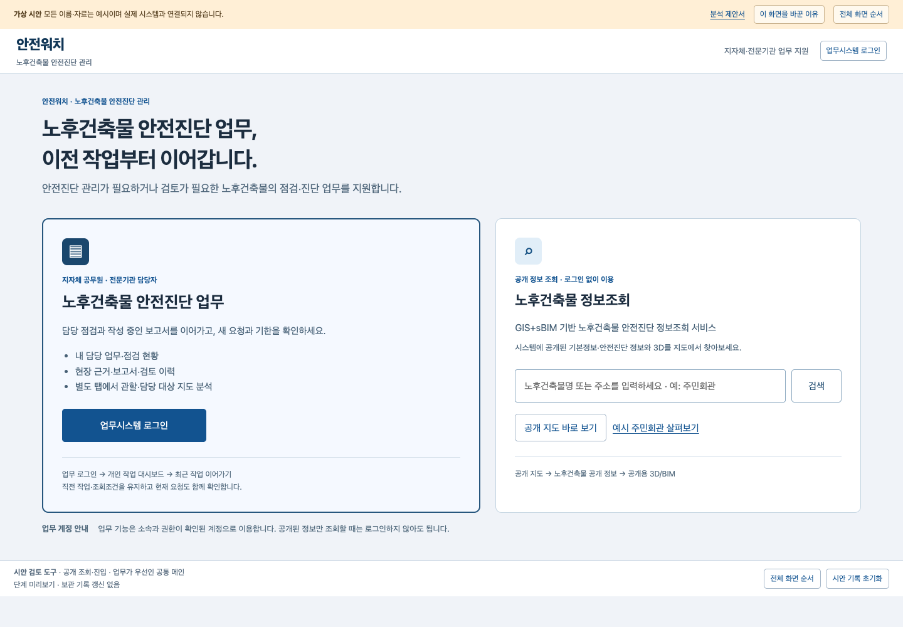

01 / 47 · 공개 조회·진입
공통 메인 · 업무 우선·공개 조회 보조
현재 관찰: 직전 시안은 공개 조회를 왼쪽에 크게 배치하고 일반 건축물 정보 서비스처럼 소개했습니다.
개편 이유: 매일 이용하는 담당자의 업무 입구가 뒤로 밀리고, 노후건축물 안전진단 관리라는 주목적을 알아보기 어려웠습니다.
대안: 왼쪽에 지자체·전문기관 업무를 먼저 배치하고 오른쪽에 비로그인 GIS+sBIM 정보조회를 보조 경로로 제공합니다.
이 단계의 시안 직접 열기 →